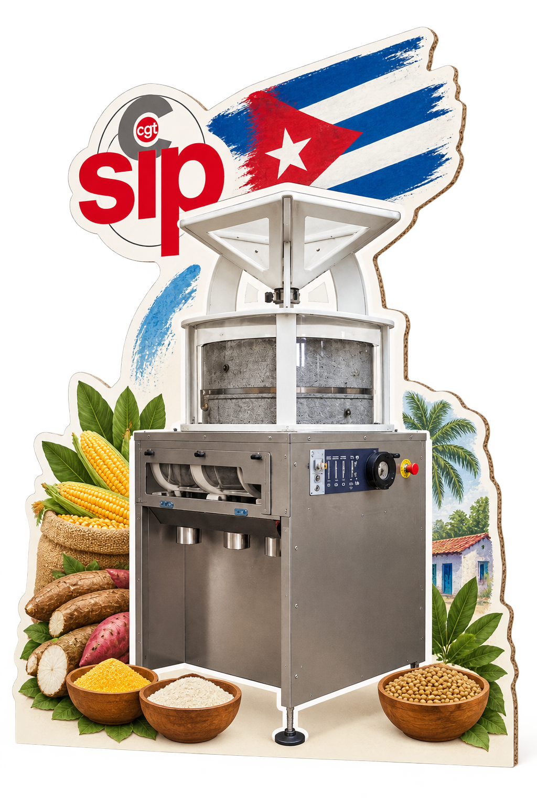

Un moulin pour Cuba
De la terre à l'assiette, construisons l'autonomie alimentaire à Cuba.

Le SIPC-CGT lance une nouvelle action de solidarité concrète : équiper un atelier de transformation alimentaire à Cuba d'un moulin à meule professionnel AMPLYO et d'une machine à pâtes professionnelle PM30.
Ce projet permettra aux coopératives cubaines de transformer sur place les productions locales — manioc, patate douce, plantain, maïs, sorgho, légumineuses — en farine, pain, pâtes, biscuits et préparations nutritionnelles.
Pourquoi ce projet ?
- Limiter les pertes après récolte
- Réduire les distances entre production et consommation
- Renforcer l'autonomie alimentaire locale
- Créer un modèle reproductible dans d'autres provinces cubaines
Notre engagement
Le SIPC-CGT assure le transport maritime, l'installation, la mise en service, la formation des opérateurs et le suivi du projet. Investissement estimé : 25 000 à 50 000 €.
Recevez les nouvelles du projet
Inscrivez-vous pour suivre l'avancement du projet : photos, témoignages, prochaines étapes et appels à dons.
Vos données ne serviront qu'à vous informer sur le projet. Vous pourrez vous désinscrire à tout moment.
Bientôt : participer au financement
Le dispositif de don en ligne sera activé prochainement. En attendant, inscrivez-vous pour être informé dès qu'il ouvre.